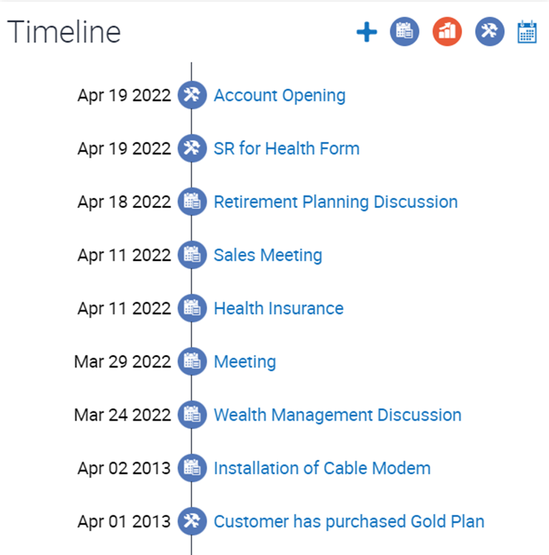
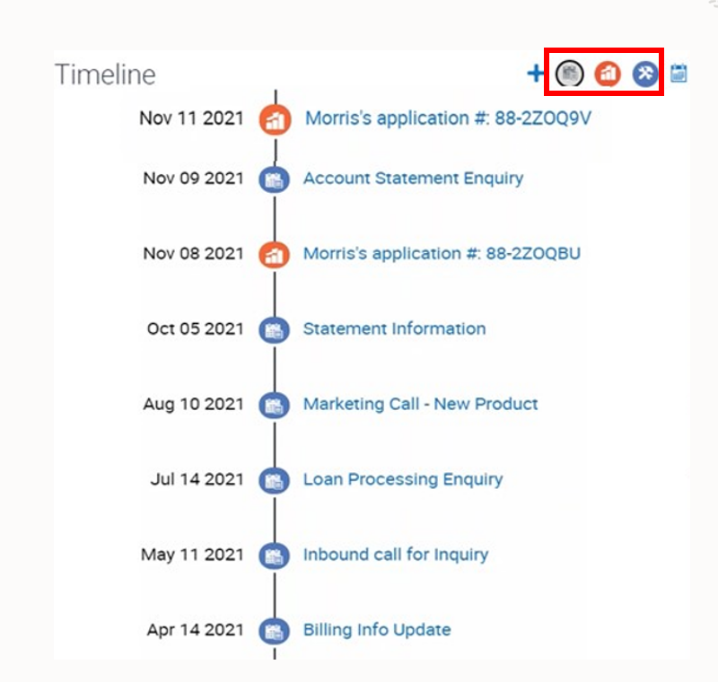
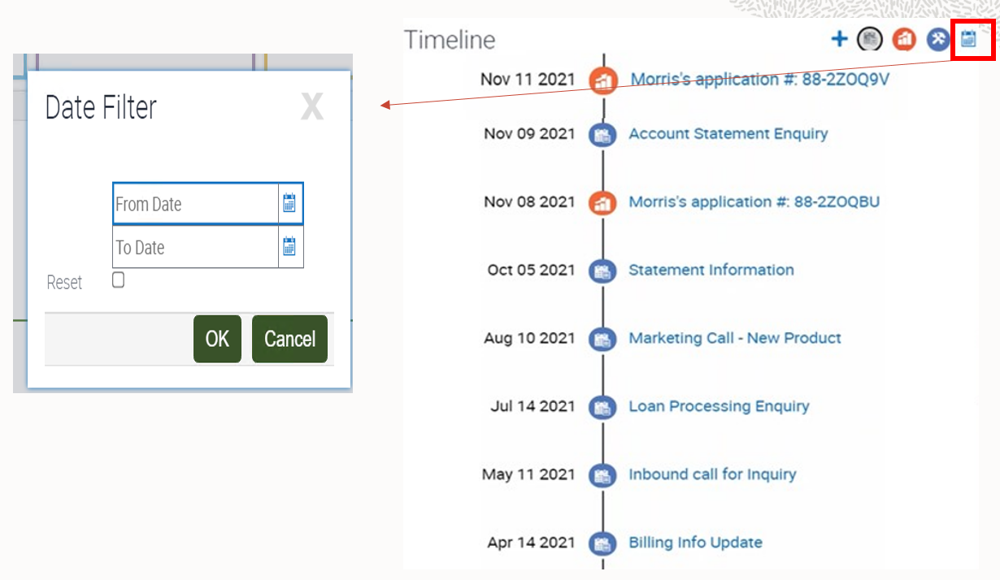
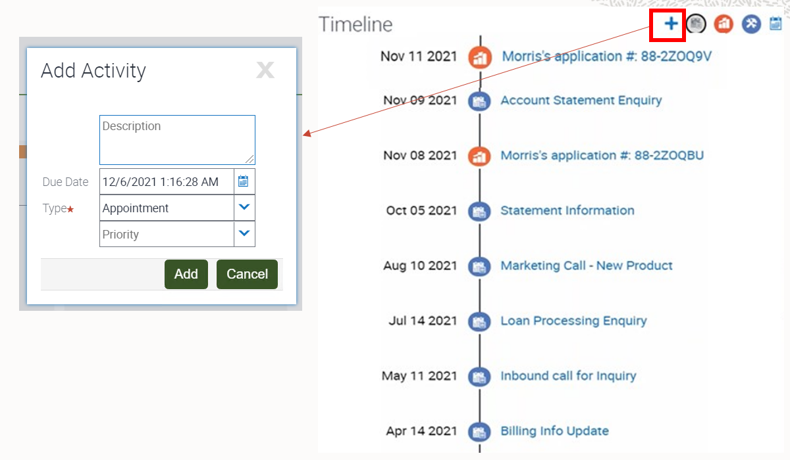
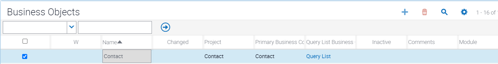
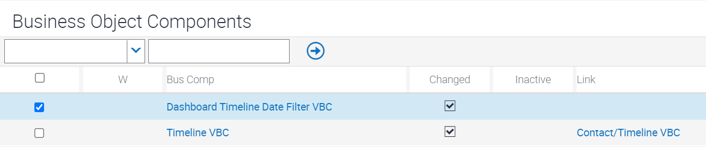
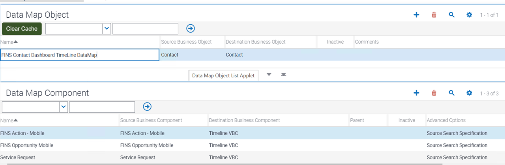
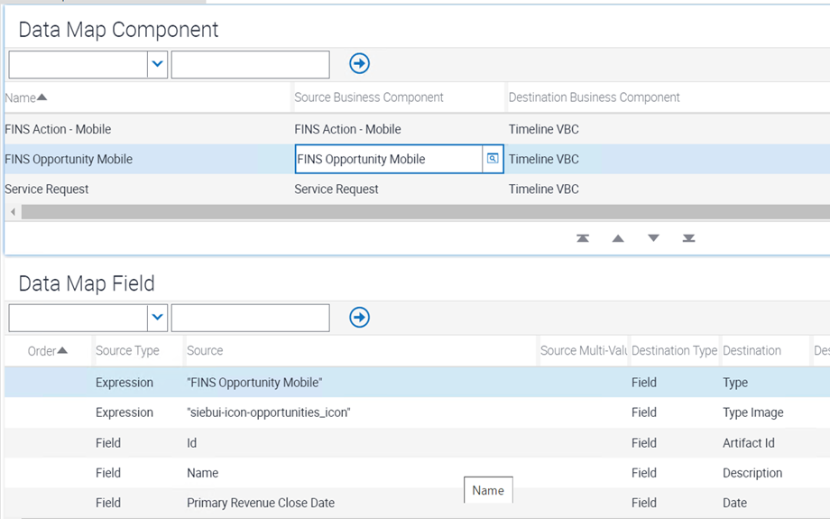
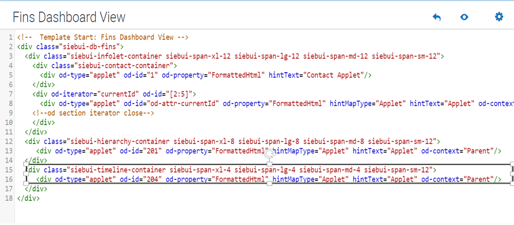

This topic provides information about configuring timeline components. This topic is part
of Configuring Data Visualization Components. This topic contains the following information:
About Configuring Timeline Components
About the Timeline VBC Virtual Business Component
Mapping Business Components
Configuring the Data Map
Configuring the Timeline Applet
Configuring the Applet User Property for Specifying the Data Map
Creating Controls
Configuring Drilldown Objects
Creating the List and List Columns
Mapping Applet Web Template and Web Template Items
Mapping the Physical Renderer to the Timeline Applet
Mapping the Timeline Applet to a View Web Template
About Configuring Timeline Components
As noted in Timeline Components, a
timeline applet can display various entities (like activities, opportunities, sales
orders, and service requests) for a business object (such as Account or Contact). The
entities are displayed in reverse chronological order, with the most recent record at
the top. The example data used throughout is from the timeline applet FINS Contact
Dashboard Timeline List Applet, which is part of the Siebel Financial Services
dashboard. Each type of entity is displayed using a different icon. Icons are
configurable.

The following are some of the features of the timeline component:
Entity filtering. Users can filter the data based on the type of entity.
The entity filter buttons are toggle buttons. Clicking a button hides data for
that entity from the timeline and the button dims. Clicking the dimmed button
displays that entity data on the timeline again. In the figure below, the red
rectangle around the middle three icons in the top right of the timeline indicates
the entity filters, like activities, opportunities, sales orders, and service
requests. (The timeline on the Siebel Telecommunications dashboard includes sales
orders, as seen in Siebel Telecommunications Dashboard.)

Date filtering. Clicking the calendar icon allows users to filter the data
based on a date range. The following is an illustration of using date filtering.
In the figure below, the red square in the top right of the timeline indicates the
calendar icon. The Reset option in the pop-up is used to reset the most recently
used date filter.

Adding a new activity. Clicking the plus button (+) allows the user to
enter a new activity. Clicking the plus (+) icon in the timeline brings up the Add
Activity pop-up. Once the activity is added, it appears in the timeline. In the
figure below, the red square around the plus (+) icon indicates the Add Activity
icon.

Navigating to detail view. Clicking the description for a timeline item
allows the user to drill down and navigate to the detail view. For example,
clicking an opportunity item navigates to the Opportunity Details view, while
clicking a sales order navigates to the Sales Order Details view.
About the Timeline VBC Virtual Business Component
Timeline VBC is a new C++ framework virtual business component created to support the
timeline functionality. This VBC executes the data map to fetch information from
multiple entity business components mapped to the VBC in the data map. Timeline VBC must
be added to the business object with a link to the primary business component.
For sample data for the Siebel Financial Services dashboard, the VBC executes the data
map FINS Contact Dashboard TimeLine DataMap and retrieves data from these entities:
Activities, Opportunities, Sales Orders, and Service Requests. Data fields for these
entities are mapped to the following fields in Timeline VBC:
This table describes the Timeline VBC fields.
Timeline VBC Fields (Destination Fields in the Data
Map)
Description
Artifact Id
Required for drilldown functionality. Maps to the row ID field of the
source business component.
Date
The pivot field used for sorting functionality in timeline. The data type
must be DATETIME.
Description
The description shown for a timeline item. By default, the drilldown is
configured on this field.
Type
The data map retrieves data from multiple business components. The Type
field is used to distinguish between these business components. You must
associate each unique type with the appropriate business component in the
data map.
Type Image
The CSS class name associated to each type to render the icon image while
showing a list of records in the timeline applet.
Mapping Business Components
Before you configure the timeline applet, you must map the business components and
configure the data map. First, do the following:
Identify all source business components that need to be part of the timeline data.
Make sure that business components for multiple entities are part of a single
business object, such as Contact.
Make sure the business component search specification is constrained to get the
appropriate data. For example, for the Siebel Financial Services dashboard, the
Opportunities business component is constrained by the Contact Id field to get
opportunities for a particular contact.
In Siebel Web Tools, select Business Object. For the business object you are using (such
as Contact), map the following required framework business object components (business
components). Also map all of the business components for which data is to display on the
timeline.
This table lists required framework business components to add to the business
object.
Business Component
Link
Comment
Dashboard Timeline Date Filter VBC
Supports date filtering in the timeline.
Timeline VBC
<Primary BC> / Timeline VBC
Consolidates data from multiple entities using the data map. In this
example, the primary business component is Contact.
The following figures show mapping the required framework business components to the
business object, such as Contact:


Next, configure the data map for the timeline.
Configuring the Data Map
Configuring the data map specifies source and destination business component mapping and
merges source records from multiple entities to a single destination VBC (Timeline VBC).
When creating the data map, you also define field mapping of source and destination
fields. For examples, refer to the sample data map, FINS Contact Dashboard TimeLine
DataMap.
Data map. To create the data map, navigate to Administration - Application, then
Data Map Administration. Create a new record that specifies the names of the source
business object (containing the source business components) and the destination business
object (containing Timeline VBC). The following table shows fields for creating a data
map record.
Note: In FINS Contact Dashboard TimeLine DataMap, Contact is both the source and
destination business object.
This table shows creating the data map record for the timeline.
Name
Source Business Object
Destination Business Object
<Data Map Name>
<Source Business Object Name>
<Destination Business Object Name>
Data map components. Next, specify the data map components. Each data map
component specifies a business component in the source business object and in the
destination business object. The example timeline applet, FINS Contact SDashboard
Timeline List Applet, displays timeline data from Activities, Opportunities, Sales
Orders, and Service Requests.
To support activities, opportunities, and service requests, FINS Contact Dashboard
TimeLine DataMap includes the following source business components:
FINS Action - Mobile
FINS Opportunity Mobile
Service Request
The following is a sample configuration for specifying data map components:

Data map components in FINS Contact Dashboard TimeLine DataMap also support advanced
options, which are used for search specifications, as follows:
This table shows advanced options for data map components.
Name
Source Business Component
Destination Business Component
Advanced Options
FINS Action - Mobile
FINS Action - Mobile
Timeline VBC
Source Search Specification
Value:
[Contact Id]=[&Id]
FINS Opportunity Mobile
FINS Opportunity Mobile
Timeline VBC
Source Search Specification
Value:
[Key Contact Id]=[&Id]
Service Request
Service Request
Timeline VBC
Source Search Specification
Value:
[Contact Id]=[&Id]
Data map fields. Finally, in the Data Map Field list of the Data Map
Administration view, you specify the field mapping from each source business component
to the destination business component (Timeline VBC). Create one record for each
destination field in Timeline VBC, as follows. Examples follow for data map components
for Activities, Opportunities, and Service Requests. If you later determine you do not
need a particular field to display in the timeline, then you can set it to be
inactive.
This table shows creating the field mapping for the data map FINS Contact
Dashboard TimeLine DataMap.
Source Type
Source
Destination Type
Destination
Field
Id
Field
Artifact Id
Field
<Date Type Field from Source Business Component>
Field
Date
Expression
<Expression to Expose Value of Source Field Name in UI>
Field
Description
Expression
"<Source Business Component Name>"
Field
Type
Expression
"<Entity Icon Class>"
Field
Type Image
The following table lists examples of field mapping for the data map component FINS
Action - Mobile (for Activities):
This table shows field mapping for the data map component FINS Action -
Mobile.
Source Type
Source
Destination Type
Destination
Field
Id
Field
Artifact Id
Field
Planned Completion
Field
Date
Expression
IIF([Description] IS NOT NULL,[Description],[Id])
Field
Description
Expression
"FINS Action - Mobile"
Field
Type
Expression
"siebui-icon-activities_icon"
Field
Type Image
The following table lists examples of field mapping for the data map component FINS
Opportunity Mobile (for Opportunities):
This table shows field mapping for the data map component FINS Opportunity
Mobile.
Source Type
Source
Destination Type
Destination
Field
Id
Field
Artifact Id
Field
Primary Revenue Close Date
Field
Date
Expression
Name
Field
Description
Expression
"FINS Opportunity Mobile"
Field
Type
Expression
"siebui-icon-opportunities_icon"
Field
Type Image
The following table lists examples of field mapping for the data map component Service
Request (for Service Requests):
This table shows field mapping for the data map component Service Request.
Source Type
Source
Destination Type
Destination
Field
Id
'Field'
Artifact Id
Field
Updated
'Field'
Date
Expression
IIF([Abstract] IS NOT NULL,[Abstract],[SR Number])
'Field'
Description
Expression
"Service Request"
'Field'
Type
Expression
"siebui-icon-service_requests_icon"
'Field'
Type Image
The following is a sample configuration for specifying data map fields:

Note: After completing the configuration of the data map for the timeline, clear the cache
data using the Clear Cache button in the Data Map Objects list.
Configuring the Timeline Applet
This step shows you how to create and configure a new timeline applet. You must create a
new workspace and create a new applet with the following properties. The example data in
this topic is for the FINS Contact Dashboard Timeline List Applet.
This table lists the properties you configure for the applet FINS Contact
Dashboard Timeline List Applet.
Property Name
Value
Comment
Name
<AppletName>
The name of the applet. In this example, the applet name is FINS Contact
Dashboard Timeline List Applet.
Class
CSSSWEFrameList
The name of a C++ class used to manage the applet. This is the timeline
applet framework class. The framework constructs the CSS class based on
the business component mapped to the applet.
Type
Standard
By default, the type is Standard.
Business Component
Timeline VBC
The name of the virtual business component for timeline applets. The
Timeline VBC business component must be defined in the business object
specified for any view that uses this applet.
Applet Title
<AppletTitle>
The applet title is autopopulated based on the value of the property
Title - String Reference.
Configuring the Applet User Property for Specifying the Data Map
For the timeline applet (FINS Contact Dashboard Timeline List Applet in this example),
create a Data Map user property, as follows. By setting this user property, you
associate the data map you created with the timeline applet. This data map is used by
the timeline framework to fetch the corresponding timeline items.
This table lists the property you configure for the Data Map user property.
Property
Value
Comment
Data Map
<DataMapName>
The name of the data map, such as FINS Contact Dashboard TimeLine
DataMap, that you are associating to this timeline applet.
Creating Controls
Filter type controls. For the timeline applet (FINS Contact Dashboard Timeline
List Applet in this example), create a filter type control for each entity filter
supported for the timeline, as follows:
This table lists the properties you configure for each filter type control.
Property
Value
Comment
Name
<EntityFilterName>
The name of the control, such as the following:
Activities: ActionFilter
Opportunities: OpptyFilter
Service Requests: SRFilter
HTML Type
MiniButton
The HTML type for the control you create. This must be MiniButton.
Method Invoked
Filter|<BC Name of the Entity>
The method invoked when the entity filter is clicked.
Caption - String Reference
<Caption>
The caption property is populated based on this mapping.
Next, configure control user properties for each filter type control, as follows:
This table lists the control user properties you configure for each filter type
control.
Property
Value
Comment
ClientPMUserProp
Filter Image
This value cannot be changed.
Filter Image
<Icon Name>
The icon for the entity filter. The following icon names are used:
Activities: siebui-icon-activities_icon.
Opportunities: siebui-icon-opportunities_icon.
Service Requests: siebui-icon-service_requests_icon.
NewButton control. For the timeline applet (FINS Contact Dashboard Timeline List
Applet in this example), create the NewButton control for the timeline, as follows. This
button invokes the Activity Popup Applet.
This table lists the properties you configure for the NewButton control.
Property
Value
Comment
Name
NewButton
The name of the control, such as NewButton.
HTML Type
MiniButtonNew
The HTML type for the control you create. This must be MiniButtonNew.
Method Invoked
ShowPopup
The method invoked when the new button is clicked.
Caption - String Reference
<Caption>
The caption property is populated based on this mapping. The value might
be SBL_NEW-1004235437-602.
Next, configure control user properties for the NewButton control, as follows:
This table lists the control user properties you configure for the NewButton
control.
Property
Value
Comment
Mode
New
This value cannot be changed.
Popup
Dashboard Timeline Activity PopUp Applet
The name of the pop-up applet to display.
DateFilter control. For the timeline applet (FINS Contact Dashboard Timeline List
Applet in this example), create the DateFilter control for the timeline, as follows.
This button invokes the Dashboard Timeline Date Filter PopUp Applet.
This table lists the properties you configure for the DateFilter control.
Property
Value
Comment
Name
DateFilterButton
The name of the control, such as DateFilterButton.
HTML Type
MiniButtonNew
The HTML type for the control you create. This must be MiniButtonNew.
Method Invoked
ShowPopup
The method invoked when the new button is clicked.
Caption - String Reference
<Caption>
The caption property is populated based on this mapping. The value might
be SBL_NEW-1004235437-602.
Next, configure control user properties for the DateFilter control, as follows:
This table lists the control user properties you configure for the DateFilter
control.
Property
Value
Comment
Mode
New
This value cannot be changed.
Popup
Dashboard Timeline Date Filter PopUp Applet
The name of the pop-up applet to display.
Configuring Drilldown Objects
To support drilldown functions for the timeline, you must configure drilldown objects.
For this applet (FINS Contact Dashboard Timeline List Applet in this example), navigate
to Drilldown Objects. Then create and configure drilldown objects, as follows. Example
values are shown for activities, opportunities, and service requests.
This table shows the configuration for the drilldown objects for this example.
Name
View
Source Field
Business Component
Destination Field
<Drilldown Name>
Example records follow.
<Destination View>
<Field from node level BC>
<Destination BC>
<Field from Destination BC>
GotoActivities
Activity Attachment View
Artifact Id
Action
Activity Id
GoToOppty
Opportunity Details
Artifact Id
Opportunity
Row Id
GotoServiceRequests
Service Request Detail View
Artifact Id
Service Request
Id
When multiple drilldown objects are configured for the applet, then, for each drilldown
object after the first one, you must create a record under Dynamic Drilldown
Destinations, as follows:
This table shows the configuration for the dynamic drilldown destinations for this
example.
Name
Field
Value
Destination Drilldown Object
Sequence
Upgrade Behavior
<Dynamic Drilldown Destination Name>
<Type>
Specifies the Type field in the business component that the applet
references.
<View matched with the Type field>
<Name of Drilldown Object in BC>
<Search order for children of a drilldown object>
Search from lowest to highest according to the integer value that this
property contains.
<Upgrade Behavior>
Specifies the upgrade behavior.
GoToOppty
Type
FINS Opportunity Mobile
GoToOppty
1
Preserve
GotoServiceRequests
Type
Service Request
GotoServiceRequests
2
Preserve
Creating the List and List Columns
For this applet (FINS Contact Dashboard Timeline List Applet), navigate to List. Create
a new list record named List, with the following properties:
This table lists the properties you configure for the List list.
Property
Value
Comment
Name
List
Do not change this value.
For this list, create and configure the following list columns:
This table lists the list columns you configure.
Name
Field
HTML Type
Display Name
Artifact Id
Artifact Id
Text
Id
Date
Date
PlainText
Date
Description
Description
Text
Description
Type
Type
Text
Type
Type Image
Type Image
Text
Type Image
Mapping Applet Web Template and Web Template Items
For this applet (FINS Contact Dashboard Timeline List Applet in this example), create a
new applet web template, as follows:
This table lists the properties you configure for the applet web template.
Property
Value
Comment
Name
<Edit List>
The name of the applet web template.
Type
Edit List
The type of applet web template. In this case, the Type must be Edit
List.
Web Template
Applet Vertical TimeLine
The type of web template for this applet web template. It must be Applet
Vertical TimeLine.
Create an applet web template item for this applet web template, as follows:
This table lists the applet web template item for this example.
Name
Control
Item Identifier
Type
<Entity Filter>
<Control Name>
<Item Identifier>
Must be in range of 10 to 154, inclusive.
<Control Type>
<NewButton>
NewButton
155
Control
<DateFilterButton>
DateFilterButton
156
Control
Date
Date
501
List Item
Type
Type Image
502
List Item
Description
Description
503
List Item
Mapping the Physical Renderer to the Timeline Applet
You must register the new timeline applet (such as FINS Contact Dashboard Timeline List
Applet in this example) with physical renderer settings. In this task, the Files record
you create specifies the file siebel/timelinerenderer.js (for physical renderer). This
task is needed for automation support and for supporting a custom CSS style class.
Navigate to Administration - Application screen and then to the Manifest
Administration view.
You must register the new applet (such as FINS Contact Dashboard Timeline List
Applet) with new physical renderer settings.
In the UI Objects list, create a new record with values like the following:
This table shows the UI Objects record you must create.
Type
Usage Type
Name
Applet
Physical Renderer
<AppletName>
In the Object Expression list, create a new record with the following value:
This table shows the Object Expression record you must create.
Level
1
In the Files list, create a new record with the following values:
This table shows the Files record you must create.
Level
Name
1
siebel/timelinerenderer.js
Mapping the Timeline Applet to a View Web Template
You must also map the timeline applet (FINS Contact Dashboard Timeline List Applet in
this example) to the view that is to display the timeline applet. Typically, this is the
view representing a particular dashboard into which you are mapping multiple applets for
different data visualization components.
The view web template for the view FINS Contact Dashboard View (for the Siebel Financial
Services dashboard), for example, has a placeholder for the timeline applet. Review the
highlighted content shown below for the view web template Fins Dashboard View, beginning
with div class="siebui-timeline-container ...".

In any new view to display a timeline applet, this timeline applet must be mapped to the
view. You must also add the necessary classes to the view web template to achieve the
required height and width. You can customize or override the styling on the existing CSS
classes of the timeline applet. The view web template item must specify the applet mode
Edit List for a timeline applet that you map. For example, create a view web template
item as follows:
This table shows the view web template item for this example.
Name
Applet
Applet Mode
Item Identifier
<Applet Name>
<Timeline Applet Name>
Edit List
<Item Identifier for Timeline>
The following is a sample configuration of the view web template and view web template
items, for this example: